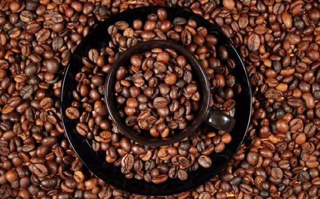

세계 3대 커피원두
커피의 3대 원두 종류라면 흔히 아라비카(Arabicas), 로부스타(Robustas), 리베리카(Libericas)를 꼽는다. 현재 상업적으로 재배하는 주요 품종은 아라비카(Arabica)와 로부스타(Robusta)로 이 둘은 전체 품종의 95%를 차지한다. 그러나 리베리카 품종(1% 미만)은 가뭄에 약해 현재는 거의 생산되지 않고 있다.아라비카종은 커피 총 생산량의 70%를 차지하는 세계적으로 가장 많이 재배되고 있는 품종이다.
에디오피아가 원산지로, 열대와 아열대 사이의 해발 1000~2000m의 고산지대에서 재배된다.
아라비카종은 기후나 토양 등에 민감해 재배가 까다로운 커피지만, 로부스타종에 비해 단맛·신맛·감칠맛 등 맛이 풍부하고 향기 또한 뛰어나 고급품종으로 인정받고 있다.
브라질은 세계 제일의 산출량을 자랑하는 품종으로 원두의 모양은 원형 또는 타원형이며, 부드럽고 신맛이 강한 특징이 있다.
세계 총 생산량의 30%를 차지하는 콩고가 원산지인 로부스타종은 평지와 해발 1000m 사이에서 주로 재배된다.
아라바카에 비해 카페인 함량이 많으며 쓴맛이 강하고 향이 부족하다는 단점이 있다.
그러나 주변 환경에 구애받지 않는 강한 생명력을 지니고 있고 경제적 이점 때문에 인스턴트 커피의 주원료로 사용된다.
아프리카의 라이베리아가 원산지로, 역사는 짧다. 아라비카나 로부스타보다 열매가 크고 강해 재배하기 쉬운 것이 장점이지만,
아라비카종보다 향미가 떨어지고 쓴맛이 지나치게 강하다. 대부분 자국 소비에서 그친다.
